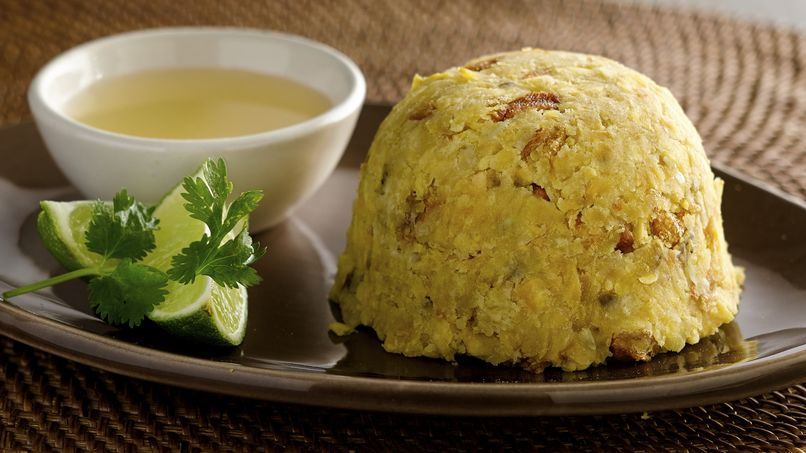

Mofongo

Description
This is a Puerto Rican dish that reflects the island's rich cultural roots.
It can be prepared using traditional methods, but new ways have also emerged
in recent times.
Ingredients
For the Mofongo
- 1 cup oil--corn, peanut, or soy--for frying
- 4 green plantains, peeled and cut into 1 inch slices
- 2 tablespoons garlic, mashed
- 1 pound pork cracklings cut into 1 inch pieces
- 1 1/2 teaspoons salt, or more to taste
For the Garlic Mojo
- 6 garlic cloves
- 1/2 teaspoon salt
- 2 tablespoons bitter orange juice, freshly squeezed
- 2 tablespoons olive oil
- 1/4 teaspoon ground cumin
- 1/2 teaspoon dried oregano, crushed
- 1 tablespoon cilantro, roughly chopped
- Salt to taste
Steps
To Make the Mofongo
-
Heat oil in a medium skillet over medium heat. Fry the plantains for 5-8 minutes, or golden brown on all sides. Transfer the plantains to a plate lined with a paper towel to remove excess grease.
-
Using a large pilón (mortar and pestle) mash the plantains, garlic, and pork cracklins together, until the plantains are broken down. You might have to do this in small batches.
-
Pack a serving into a small bowl and turn it over onto a plate for serving. Remove the bowl.
-
Serve with extra pork cracklings (chicharrón) and garlic mojo on the side.
To Make the Garlic Mojo
-
Crush together garlic cloves and salt with a pilón (mortar and pestle), until you obtain a smooth paste. Transfer into a medium bowl.
-
Stir in fresh bitter orange juice, olive oil, cumin, oregano, and chopped cilantro.
-
Add more salt to taste, if desired.
Home